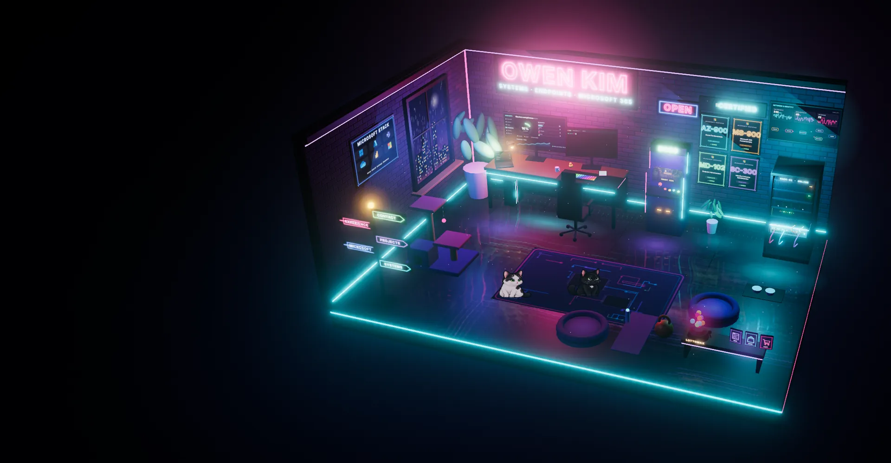

A neon IT office. Switch on 3D to look around.
Good systems.
Happy humans.
A little curiosity.
Hi, I’m Owen. I look after the sign-ins, devices and networks behind a workplace, so people can just get to work.
- Systems Administration
- Endpoint Engineering
- Microsoft 365
- Modern Workplace
01 / SYSTEMS & ENDPOINTS
Behind every smooth day,
there’s careful IT.
I look after what people only notice when it breaks: sign-in, devices, mail, network and servers. I fix the cause, write it down and make the next handover easy.
02 / MICROSOFT & CERTIFICATIONS
Certified in the tools
I use every day.
Four Microsoft certifications that match my daily work: Azure, Microsoft 365, endpoint management and identity.
03 / THE JOURNEY SO FAR
Experience that
connects the dots.
Hands-on operations across North America, Europe, and Asia. Root causes, clear documentation, and people first.
The full story on LinkedIn ↗Dankook University
Bachelor of Science, Computer Science and Psychology · Seoul, Korea
British Columbia Institute of Technology
Diploma, Automotive Technology · Burnaby, BC
04 / OFF THE CLOCK, STILL CURIOUS
The projects.
A small piece of each app, ready to try.
Play, explore, and make something happen.
Interactive previews run right here. No account needed. Sample data stays in the preview.
A HUMAN BEHIND THE HELP DESK
Curious by nature.
Calm when it counts.
I keep the systems behind a company running — identity, devices, and the network — and I automate the parts that shouldn’t need a person.
I work in English, Korean, and Chinese. Away from IT operations, I build small apps and games, usually with Bomi and Seoli somewhere nearby.
Bomi
Chief nap officer
Seoli
Head of curiosity
OPEN TO THE NEXT CHAPTER
Let’s make work
work better.
owen.sykim@gmail.com ↗Systems administration · Endpoint engineering · Modern workplace
Infrastructure & technical analysis · Microsoft 365 + AI enablement